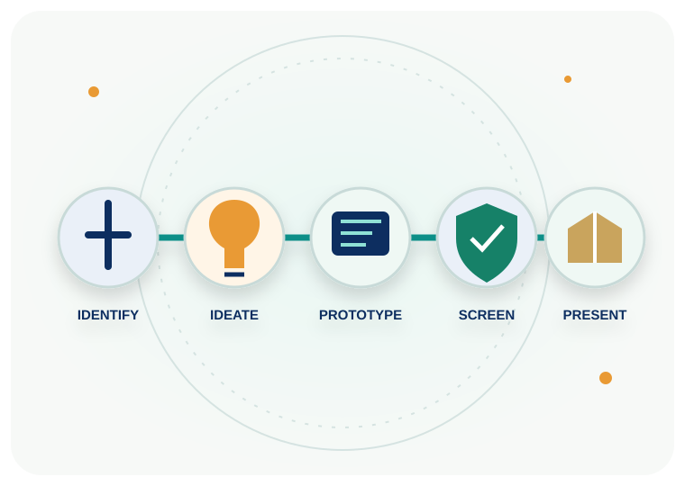

Identify
Choose a meaningful problem in healthcare delivery, education, diagnostics, patient experience or operations.
Bring forward a healthcare problem worth solving. Develop your idea, shape a prototype and present your proposed solution to the Hackathon panel.

Strong projects begin with a clearly defined problem, a user who experiences it and a practical concept that can be tested.
Choose a meaningful problem in healthcare delivery, education, diagnostics, patient experience or operations.
Explain the target user, the problem, your approach and why the proposed solution is useful.
Demonstrate the key workflow or product idea through a functional or clearly explained prototype.
The top three teams are planned to receive cash awards, completion certificates and mementos. The award amounts, judging criteria and detailed conditions will be published after formal organiser approval.
Selected ideas may be considered for a structured support journey to explore product development and adoption. The pathway can include technical development, healthcare mentorship, financial and administrative guidance, pilot connections and go-to-market support.
See recognition & support →Follow the organiser's final project-upload instructions. Do not email confidential patient information or identifiable health records as part of a project.
Ask the organiser a question →